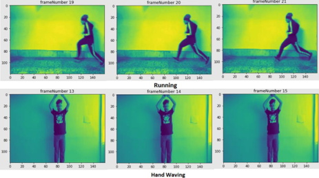

Robotics Researcher | Mechatronics and Intelligent Systems
Academic Website
About Me
Welcome to my academic website. I am a robotics researcher
with a background in mechanical engineering and mechatronics.
My research interests include robotic systems, modeling and
control, magnetic medical robots, and intelligent robotics.
Here, you can find information about my research projects,
publications, and academic background.
Major Projects
Endoscopic Capsule Robots
This project focuses on the design, prototyping, and control of magnetically actuated capsule endoscopes.
A major part of this research involved the design and experimental validation of a biopsy mechanism for
capsule robots. Since both capsule localization and biopsy actuation rely on magnetic fields, the design
aimed to minimize interference between these functions while maintaining a fail-safe biopsy mechanism. In
addition, I investigated optimal control strategies for capsule robots to minimize the energy consumption
of the actuation coils.
This project was part of my M.Sc. thesis at Sharif University of Technology and resulted in two publications.
The video below demonstrates the experimental position control of the developed capsule robot.
Magnetic tracking offers a promising alternative to fluoroscopic imaging for localizing intrabody medical devices.
Conventional approaches combine mathematical magnetic field models with iterative algorithms, but they are often
computationally intensive, sensitive to initial estimates, and prone to divergence. Although artificial neural networks
can overcome some of these limitations, they typically require large training datasets, which can be challenging
to obtain in clinical settings. In this project, I developed a CNN-based localization method that incorporates computer
vision techniques to improve localization performance while reducing reliance on extensive training data.
This project was part of my M.Sc. thesis at Sharif University of Technology and resulted in a journal publication.
My research in this area focuses on the magnetic manipulation and
control of ferrofluid marble robots. I have contributed to two
research projects involving the experimental validation of control
strategies under different operating conditions. These include
position control of a single robot in the presence of model
uncertainties and independent control of two robots operating
in shared and parallel workspaces.
This research was conducted voluntarily at Sharif University of
Technology and has resulted in two manuscripts currently in
preparation. The video below demonstrates the independent control
of two ferrofluid marble robots in parallel workspaces using
substrate fluids with different viscosities.
Related Publications
Mahdi Jamali, Mohammad Reza Zarifi Khameneh,
Mohammad Hossein Sarkhosh, Mohammad Ali Bijarchi,
Hossein Nejat Pishkenari.
Independent Position Control of Two Ferrofluid
Marble Robots in Shared and Parallel Workspaces. In preparation.
Mahdi Jamali, Mohammad Hossein Sarkhosh,
Mohammad Reza Zarifi Khameneh, Mohammad Ali Bijarchi,
Hossein Nejat Pishkenari.
Adaptive Observer-Based Model Predictive Control
for Magnetically Actuated Liquid Marbles. In preparation.
Other Projects
Steel Surface Defect Detection and Classification Using Semantic Segmentation
This project was completed as part of my undergraduate Computer Vision
course. I investigated semantic segmentation algorithms, including
FCN-8 and U-Net with different backbone architectures, for detecting
and classifying defects on steel surfaces.
The project resulted in a conference paper.
This project was developed as part of my undergraduate Computer Programming course.
The objective was to implement a ball-and-obstacle game simulator in C++ using the `graphics.h` library,
with separate classes to represent the ball and generate the obstacles.
Object Detection Using YOLOv5
This project was developed as part of my undergraduate Artificial Neural
Networks course. The objective was to use YOLO models to detect bicycles,
motorbikes, and their riders, and determine whether the riders were wearing
helmets. The dataset was created by manually annotating images from the
Helmet Detection
dataset. The validation was perfomed on a random video from YouTube.
Human Action Recognition
This project was developed as part of my undergraduate Artificial Neural
Networks course. The objective was to recognize six types of human activities
(walking, jogging, running, boxing, hand waving, and hand clapping) from videos
using the KTH dataset. I implemented a
combination of CNNs and LSTM networks to build the model. The model was evaluated using several
self-recorded videos.

Fabrication of a Micromixer for Mixing Rhodamine B in Water
This project was developed as part of my graduate Lab-on-a-Chip course.
The objective was to design and fabricate a microfluidic device to mix
Rhodamine B powder with a limited volume of water. The device geometry
was designed to promote powder dissolution as the water droplet flowed
through the microchannels. The prototype was fabricated from Plexiglas
using laser cutting.
Education
Sharif University of Technology
Tehran, Iran
M.Sc. in Mechanical Engineering — Applied Design
GPA: 18.82/20 (4.00/4.00)
Academic Rank: 7th among 61 students (2022 intake)
K. N. Toosi University of Technology
Tehran, Iran
B.Sc. in Mechanical Engineering
GPA: 18.61/20 (3.93/4.00)
Academic Rank: 4th among 106 students (2018 intake)
Selected Courses
Robotic Surgery, Nonlinear Control, Artificial Neural Networks,
Computer Vision, Social and Cognitive Robotics,
Measurement Systems and Control
Curriculum Vitae
You can learn more about my education, research experience,
technical skills, and publications in my
CV.
Contact
For academic inquiries and research collaborations,
please contact me by email.